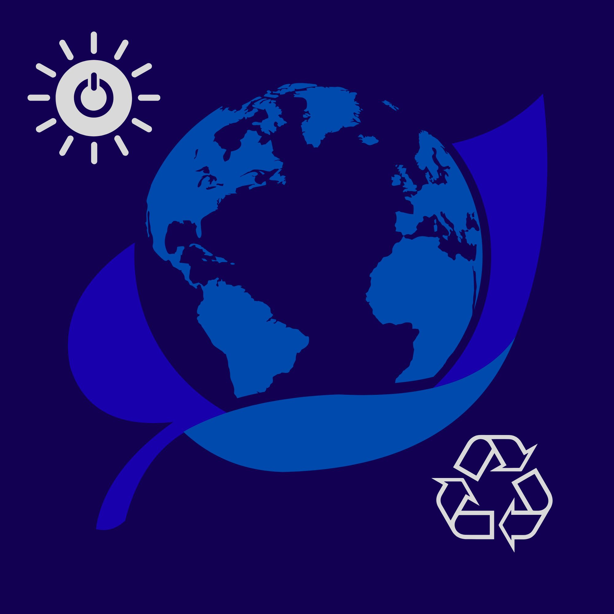

Realpolitik für eine sichere Zukunft
Die FOD verbindet Ordnung, wirtschaftliche Stärke, soziale Sicherheit und europäische Verantwortung – auf Basis von Studien u.a. von DIW, IW, IMK, BVR und Statistischem Bundesamt.

Worauf die FOD reagiert
- unkontrollierte Zuwanderung
- stagnierende deutsche Wirtschaft
- Veränderungen im Arbeitsmarkt
- die soziale Spaltung und ungerechte verteilung von Geldern
- den Demografischer Wandel
- den fortschreitenden Klimawandel
- Deutschlands abfallende globale Stellung
- veraltete Bildungsmethoden
- hohe Bürokratie

Neue Volkspartei mit Potenzial für studien- und technologiebasierte Veränderungen.
Gesellschaftliche Ausgangslage
Problemwahrnehmung der Bürger
- 37 % nennen Zuwanderung/Flucht, 28 % die Wirtschaft, 18 % soziale Ungleichheit, 14 % Umwelt/Klima als wichtigste Probleme.
- 69 % sehen Deutschlands wirtschaftliche Stellung als unsicher, 72 % die gesellschaftliche Stabilität.
- 78 % halten die NATO durch die US‑Administration für gefährdet; nur etwa jeder Siebte erwartet 2026 ein Ende des Ukraine‑Kriegs.
Demografie & Fachkräfte
- Bis 2035 ist voraussichtlich jeder vierte Einwohner mindestens 67 Jahre alt (heute etwa jeder Fünfte).
- DIW: inländisches Erwerbspersonenpotenzial sinkt zwischen 2025 und 2029 um ca. 300 000 Personen pro Jahr.
- BVR/IW: die Bevölkerung steigt bis 2035 nur leicht auf rund 84 Mio., langfristiger Abfall auf etwa 75 Mio. bis 2070 bei moderater Entwicklung.
Leitbild der FOD – sechs Säulen
1. Sicheres Deutschland
- Rechtsstaat, Kontrolle der Grenzen, konsequente Bekämpfung organisierter Kriminalität und Extremismus.
- Stärkerer Ausbau von Polizei, Justiz und Cyber‑Sicherheit.
2. Wirtschafts- und Industrienation
- Erhalt und Modernisierung des industriellen Kerns durch aktive Industrie‑ und Standortpolitik.
- Hohe Investitionen in Infrastruktur, Bildung, Digitalisierung und Dekarbonisierung.
3. Demografiefeste Sozialsysteme
- Rente, Pflege, Gesundheit langfristig stabil und generationengerecht.
- Starke Arbeitsanreize, mehr Erwerbstätigkeit von Frauen und Älteren.
- Stabile Rente durch konservative Wertpapierfonds.
4. Klima- und Energiepolitik mit Vernunft
- Technologieoffenheit Ausbau erneuerbarer Energien inkl. neuer Kernenergie‑Konzepte (SMR).
- Soziale Abfederung (Klimadividende) und Schutz der Industrie.
5. Bildung & Aufstieg
- Exzellente frühe Bildung, starke berufliche Bildung, gezielte Weiterbildung.
- Antwort auf Digitalisierung, KI und Klimawandel über lebenslanges Lernen.
6. Europäische Verantwortung
- Deutschland als verlässlicher NATO‑ und EU‑Partner mit strategischer Eigenständigkeit.
- De‑Risking gegenüber China und Russland, Stärkung europäischer Souveränität.
Migration & Integrationspolitik
Ausgangslage
- Rund ein Viertel der Bevölkerung sieht Migration als eines der wichtigsten politischen Probleme.
- DIW: In vier Jahren sollen mindestens 1,6 Mio. ausländische Personen zusätzlich in gute Arbeit gebracht werden.
- Geflüchtete Männer: Erwerbsquote nach 8 Jahren ca. 86 %, geflüchtete Frauen nur etwa 33 %.
Leitprinzipien der Migrationspolitik
1. Kontrolle & Ordnung
- Reduktion irregulärer Migration, konsequente Rückführung abgelehnter Asylbewerber und Straftäter.
2. Offene Türen für Fachkräfte
- Massive Erleichterung qualifizierter Arbeitsmigration in Engpassberufe (Pflege, Handwerk, IT, Industrie).
3. Integration als Bringschuld und Angebot
- Aufenthaltsperspektiven werden an Sprache, Arbeit und gesellschaftliche Teilhabe gebunden.
Konkrete Maßnahmen
1. EU-Außengrenzschutz & externe Asylverfahren
- Frontex‑Ausbau auf dauerhaft mind. 10 000 Grenzschutzbeamte bis 2030.
- EU‑Asylzentren in sicheren Drittstaaten; Ziel: 70 % der Asylprüfungen binnen 5 Jahren dorthin verlagern.
2. Rückführungsoffensive
- Rückführungsabkommen mit Herkunftsstaaten, verknüpft mit Visa‑ und Entwicklungspolitik.
- Jährlicher „Rückführungsbericht“ mit Zahlen zu Ausreisen, Rückführungen und verhinderten Straftaten.
3. Turbo-Fachkräfteeinwanderung
- Umsetzung des DIW‑Ziels: +1,6 Mio. ausländische Fachkräfte in vier Jahren.
- Voll digitales Portal „Work‑in‑Germany‑Cloud“ (Abschlussanerkennung, Kompetenz‑Checks, Job‑Matching).
- Ziel: Deutschland im OECD‑Ranking zur Zuwanderungsattraktivität von Rang 15 in die Top‑10.
4. Verbindliche Integrationspfade
- Verpflichtender Integrations‑ und Arbeitsplan: Sprachkurse mit Ziel B1 innerhalb von 3 Jahren.
- Verbindliche Teilnahme an Arbeitsmarkt‑ oder Qualifizierungsprogrammen, gestaffelte Sanktionen bei Verweigerung.
Wirtschafts-, Finanz- und Industriepolitik
Ausgangslage
- Phase wirtschaftlicher Stagnation, sinkende Industrieproduktion, Deindustrialisierungsrisiko.
- Hohe Energiepreise, Handelskonflikte und geopolitische Unsicherheiten belasten das Exportmodell.
- Schuldenbremse schafft nur dann Spielräume, wenn neue Kredite in rentable Investitionen fließen.
Leitprinzipien der Wirtschaftspolitik
1. Investieren statt kaputtsparen
- Hohe, zielgerichtete Investitionen in Infrastruktur, Bildung, Digitalisierung, Dekarbonisierung.
2. Industrieller Kern & Mittelstand
- Fokus auf Schlüsselbranchen: Maschinenbau, Chemie, Automotive, Halbleiter, Batterien, Wasserstoff.
3. Arbeit & Investitionen belohnen
- Entlastung niedriger und mittlerer Einkommen, weniger Bürokratie.
Konkrete Maßnahmen
1. Deutschlandfonds für Infrastruktur & Transformation
- Volumen: mind. 150 Mrd. Euro über zehn Jahre.
- Finanzierung von Verkehrs‑/Schieneninfrastruktur, Strom‑ und Wasserstoffnetzen, Breitband, 5G/6G, Bildung, Forschung.
2. Steuerliche Entlastung
- Anhebung des Grundfreibetrags um z.B. 1 200 Euro pro Jahr.
- Abflachung der Progression im unteren und mittleren Einkommensbereich.
3. Industrie-Resilienz- und Transformationspakt
- Förderprogramme für Halbleiter, Batteriezellen, Wasserstoff, klimafreundliche Industrie.
- Kombination aus Zuschüssen, zinsgünstigen Krediten und staatlicher Kofinanzierung.
- Koppelung an Standortgarantien, Ausbildungsquoten und Tarifbindung.
4. Soziale Balance
- Gezielte Entlastung besonders belasteter Gruppen (Familien mit wenig Einkommen, Alleinerziehende).
- Ausbau zielgerichteter Wohngeld‑ und Energiekosten‑Zuschüsse statt pauschaler Gießkannenhilfen.
Sozialpolitik, Rente & Demografie
Demografischer Druck
- Bis 2035: etwa jeder vierte Einwohner über 67 Jahre (aktuell etwa jeder Fünfte).
- Altenquotient steigt v.a. im Osten, was das Rentensystem belastet.
- Regionale Unterschiede: manche Regionen verlieren Einwohner, Großstädte wachsen.
Leitprinzipien der Sozialpolitik
1. Generationenfairness
- Stabiles Rentenniveau, ohne junge Generationen übermäßig zu belasten.
2. Arbeitsanreize statt Abhängigkeit
- Transferleistungen so gestalten, dass sich Arbeit klar lohnt.
3. Familienfreundliche Gesellschaft
- Gute Kinderbetreuung, finanzielle Unterstützung, bessere Vereinbarkeit von Familie und Beruf.
Konkrete Maßnahmen
1. Rentenstabilisierung mit Aktivkomponente
- Ziel‑Rentenniveau um 48 %, angelehnt an aktuelle Reformdebatten.
- „Aktivmodell“: flexible Übergänge, z.B. Teilrente ab 63 bei langer Versicherungsdauer mit attraktiven Hinzuverdienstgrenzen.
- Staatsnahe, kapitalgedeckte Fonds mit automatischer Einzahlung (Opt‑out).
2. Erwerbstätigkeit von Frauen & Älteren erhöhen
- Rechtsanspruch auf hochwertige Kinderbetreuung ab dem zweiten Lebensjahr, bessere Kita‑Qualität.
- Teilzeit‑plus‑Modelle und Weiterbildung für Ältere.
- Ziel: Erwerbspersonenquote auf über 63,7 % bis 2035 steigern bzw. Rückgang verhindern.
3. Familien- und Kinderförderung
- Bündelung von Kindergeld, Kinderzuschlag etc. in einer transparenten Kindergrundsicherung.
- Starke Anreizkomponente für Erwerbstätigkeit, Schwerpunkt auf niedrige und mittlere Einkommen.
Klima-, Energie- und Umweltpolitik
Ausgangslage
- EU‑Klimapolitik im Spannungsfeld: Emissionsreduktion vs. soziale Akzeptanz und Wettbewerbsfähigkeit.
- Think‑Tanks betonen: Klimapolitik gelingt nur mit gesellschaftlicher Akzeptanz und Einbindung der Wirtschaft.

Leitprinzipien der Klimapolitik
1. Technologieoffenheit
- Nutzung aller klimafreundlichen Technologien inkl. neuer Kernkraft‑Generation (SMR), wo sicher und wirtschaftlich.
2. Soziale Ausgewogenheit
- Rückerstattung von CO₂‑Einnahmen an Bürger, zielgenaue Unterstützung für einkommensschwache Haushalte.
3. Industriekompatibilität
- Klimapolitik so gestalten, dass der industrielle Kern erhalten und modernisiert wird.
Konkrete Maßnahmen
1. CO₂-Bepreisung mit Klimadividende
- Fortführung und Anhebung der CO₂‑Preise im EU‑ETS und nationalen Emissionshandel für Verkehr/Wärme.
- Großer Teil der Einnahmen als Pro‑Kopf‑Klimadividende zurück an Bürger.
2. Erneuerbare + Netze beschleunigen
- Vereinfachte, digitalisierte Genehmigungen für Wind‑ und Solarprojekte.
- Ausbau von Strom‑ und Wasserstoffnetzen mit Mitteln aus dem Deutschlandfonds.
3. Neue Kernenergie-Optionen prüfen
- Prüfung/Pilotierung von SMR unter strengen Sicherheitsauflagen.
- Einbettung in ein europäisches Sicherheits‑ und Entsorgungskonzept.
4. Industrie & Klima verbinden
- Förderung von grünem Stahl, klimaneutraler Chemie etc. via Investitionszuschüsse und Carbon Contracts for Difference.
- Ausbau von verstärktem Recycling, um Resourcen und Energie zu sparen.
- Nutzung von NextGenerationEU und EU‑Klimafonds zur Flankierung nationaler Maßnahmen.
Sicherheit, innere Ordnung & Verteidigung
Gefühlte Unsicherheit
- 2015 sahen 63 % die gesellschaftliche Stabilität als sicher, heute nur noch 26 %; 72 % empfinden sie als unsicher.
- Ukraine‑Krieg, Nahost‑Konflikte und Cyberangriffe verstärken das Sicherheitsbedürfnis.
Leitprinzipien der Sicherheitspolitik
1. Starker Rechtsstaat
- Gut ausgestattete Polizei, konsequente Strafverfolgung, Prävention.
2. Wehrhafte Demokratie
- Schutz vor Extremismus, Terrorismus und hybriden Bedrohungen.
3. Partnerschaftliche Sicherheit
- Enge Einbindung in EU und NATO, gemeinsame Projekte.
Konkrete Maßnahmen
1. Polizei & Justiz stärken
- Erhöhung der Zahl der Polizeivollzugsbeamten mit Fokus auf Brennpunkte und digitale Kriminalität.
- Mehr Ressourcen für Staatsanwaltschaften und Gerichte zur Verfahrensbeschleunigung.
2. Cyber-Resilienz-Offensive
- Nationales Cyber‑Sicherheitszentrum, Mindeststandards für IT‑Sicherheit in kritischen Infrastrukturen.
- Verstärkt Schulungen & Prüfungen von Mitarbeiteren kritischer Unternehmen; zur Verbesserung des Faktor Mensch.
3. Verteidigung & NATO
- Erfüllung und perspektivische Übererfüllung des 2‑Prozent‑Ziels bei Verteidigungsausgaben.
- Mehr europäische Rüstungskooperationen und Standardisierung.
Außenpolitik, Europa & globale Verantwortung
Geopolitischer Kontext
- Russischer Angriffskrieg gegen die Ukraine, Unsicherheiten in der NATO, Rivalität mit China, Spannungen im Nahen Osten.
- 78 % der Deutschen sehen die NATO durch die US‑Administration gefährdet.
Leitprinzipien der Außenpolitik
1. Regelbasierte Ordnung
- Schutz von UN, Völkerrecht und multilateralen Institutionen; klare Ablehnung von Angriffskriegen.
2. Europäische Souveränität
- Aufbau europäischer Verteidigungsfähigkeit, digitale/technologische Unabhängigkeit, De‑Risking von China/Russland.
3. Transatlantische Partnerschaft mit Eigenständigkeit
- Verlässliche NATO‑Mitgliedschaft, aber selbstbewusste Wahrnehmung europäischer Interessen.
4. Pragmatismus statt Moralismus
- Klarer Blick auf Interessen bei gleichzeitiger Achtung von Rechtsstaatlichkeit und Menschenrechten.
Konkrete Maßnahmen (Auswahl)
A. Ukraine & Osteuropa
- Mindestens 2,5 Mrd. Euro pro Jahr für mind. 10 Jahre für militärische Ertüchtigung, Wiederaufbau und Flüchtlingshilfe.
- Ausweitung der EU‑Sanktionen, Ausstieg aus russischem Öl/Gas bis 2027.
B. NATO & europäische Verteidigung
- 2 %‑Ziel erreichen und perspektivisch auf ca. 2,5 % (≈ 100 Mrd. Euro) steigern.
- Ausbau der Bundeswehr von ca. 182 000 auf 250 000–280 000 Soldaten. Durch schaffen von Anreizen und Perspektiven.
- Europäische Verteidigungsunion, gemeinsame Beschaffungen, Raketenabwehr‑Schutzschirm.
C. China & technologische Souveränität
- Strategisches De‑Risking bei Seltenen Erden, Halbleitern, Batterien, Pharma, Chemikalien.
- Investitionen von mind. 10 Mrd. Euro in europäische Halbleiter‑, KI‑ und Quantenindustrie.
Bildung, Forschung & Digitalisierung
Ausgangslage
- Fachkräftestrategie: fünf Felder – Ausbildung, Weiterbildung, Fachkräfteeinwanderung, Arbeitskultur, Mobilisierung inländischer Potenziale.
- Nationale Weiterbildungsstrategie soll eine neue Weiterbildungskultur schaffen (Digitalisierung, KI, Klimawandel).
Leitprinzipien der Bildungs- & Digitalpolitik
1. Chancengleichheit & Exzellenz
- Gute Bildung von der Kita bis zur Hochschule, starke berufliche Bildung.
2. Lebenslanges Lernen
- Fortlaufende Weiterbildung als Standardantwort auf Strukturwandel.
3. Digitale Souveränität
- Deutschland und Europa als wettbewerbsfähige Standorte für digitale Technologien.
Konkrete Maßnahmen
1. DigitalPakt Bildung 2.0
- Fortsetzung und Ausbau der Investitionen in digitale Ausstattung (Geräte, Infrastruktur, Lernplattformen).
- Verbindliche digitale Mindeststandards für Schulen und Prüfungen.
2. Berufliche Bildung & Weiterbildung
- Ausbau dualer Ausbildungsgänge in Zukunftsbranchen.
- Vereinfachte Förderinstrumente und zentrale Online‑Plattform für Weiterbildung, speziell für KMU.
3. Europäische Rolle
- Aktive Mitgestaltung der EU‑Klima‑, Industrie‑ und Digitalpolitik.
- Nutzung europäischer Programme (z.B. NextGenerationEU) zur Stärkung von Resilienz und Wettbewerbsfähigkeit.
FOD‑Check: Passt das Programm zu dir?
Der Test zeigt, wie stark deine Grundhaltungen mit dem FOD‑Programm übereinstimmen – ersetzt aber keine eigene Lektüre oder Wahlentscheidung.
1. Migration & Ordnung
Deutschland soll irreguläre Migration deutlich begrenzen, abgelehnte Asylbewerber zügig zurückführen und zugleich qualifizierte Fachkräfte aktiv anwerben.
2. Fachkräftezuwanderung
Ohne gesteuerte Zuwanderung von Fachkräften wird Deutschland Wohlstand und Sozialstaat langfristig nicht sichern können.
3. Klima & Industrie
Ambitionierter Klimaschutz ist nötig, darf aber nicht zur Deindustrialisierung führen; Politik soll Emissionen senken und gleichzeitig Industriearbeitsplätze sichern.
4. Energie & Klimaziele
Deutschland sollte alle Klimaziele fallen lassen und voll auf billige Kohle setzen; erneuerbare Energien und moderne Kernenergie sind überflüssig.
5. Sozialstaat & Eigenverantwortung
Soziale Unterstützung ist wichtig, soll aber immer so gestaltet sein, dass sich Arbeit sehr klar mehr lohnt als Nichtstun.
6. NATO & USA
Deutschland soll die NATO ernst nehmen, das 2‑Prozent‑Ziel erfüllen und gleichzeitig seine europäischen Interessen selbstbewusst vertreten.
7. Haltung zu Extremen
Ich unterstütze Parteien nur dann, wenn sie entweder alle Grenzen abschaffen oder alle internationalen Bündnisse sofort kündigen – Kompromisse lehne ich ab.
8. Evidenzbasierte Politik
Politische Entscheidungen sollen sich konsequent an Studien, Daten und realen Wirkungen orientieren – nicht an reinen Symboldebatten.
9. EU & Radikalität
Die beste Lösung für Deutschlands Probleme ist ein sofortiger Austritt aus der EU – oder eine EU ohne nationale Parlamente
10. Ukraine & internationale Ordnung
Deutschland sollte die Ukraine militärisch und finanziell unterstützen, um eine regelbasierte internationale Ordnung zu verteidigen.
11. Staatsschulden & Investitionen
Der Staat soll mehr Schulden aufnehmen dürfen, wenn das Geld klar in langfristig rentable Investitionen wie Infrastruktur, Digitalisierung und Bildung fließt.
12. Familien & Kinder
Familien mit Kindern sollen stärker unterstützt werden als heute, auch wenn dafür andere staatliche Ausgaben weniger stark wachsen können.
13. Bürgerbeteiligung & direkte Demokratie
Bei großen Zukunftsfragen (z.B. Energie, EU‑Integration) soll es häufiger verbindliche Volksentscheide auf Bundesebene geben.
14. Strafen & Sicherheit
Für bestimmte Delikte (z.B. schwere Gewalt‑ und Sexualstraftaten) sollten Strafen deutlich verschärft und Möglichkeiten zur Strafmilderung stark begrenzt werden.
15. Umgang mit Kompromissen
Gute Politik bedeutet für mich, dass meine Lieblingsposition sich zu 100 % durchsetzt – Kompromisse mit anderen Ansichten halte ich grundsätzlich für falsch.